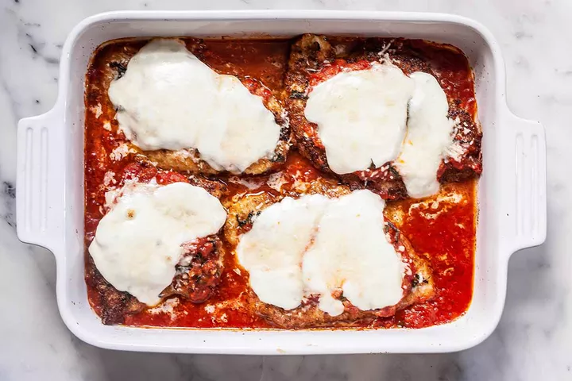

Easy Chicken Parmesan Recipe

Description
Chicken Parmesan is a classic. The dish is composed of chicken cutlets, breaded and
friend, smothered with tomato sauce, and covered with mozzarella and Parmesan cheeses.
It is served with pasta or on a roll
Ingredients
For the sauce:
- 1/2 large yellow onion, grated (don't cut onion in half, just grate half of a whole
onion), about 3/4 cup of grated onion
- 1/4 cup extra virgin olive oil
- 2 medium garlic cloves, minced
- 1 teaspoon dried oregano
- Pinch red pepper flakes
- Pinch sugar
For the chicken:
- 4 chicken breast cutlets(1 1/4 to 1 1/2 pounds)
- Salt
- Salt
- 2 large eggs
- 1 cup breadcrumbs, panko or homemade
- 1 cup freshly grated Parmesan cheese
- 1/4 cup extra olive oil
- 2 tablespoons fresh basil leaves, thinly sliced
- 8 ounces mozzarella cheese, sliced
To serve:
- Coocked spaghetti, or sub rolls
Steps
- Start the sauce
- Preheat oven to 400oF
- Pound cutlets thin
- Prepare breadcrumbs and eggs for dredging
- Dredge cutlets and brown them
- Prep the chicken for the oven
- Bake
- Serve